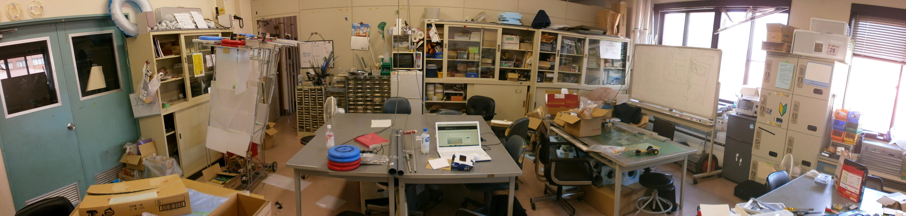

ーつくりたいロボットがある
ここでなかまとつくるー
Top Page
Activity
History
Link
Contact
設立目的
以前の筑波大学には、ロボット関係の興味や知識、技術を持っていても、それらを生かす場（サークル）がありませんでした。
また、個人によるロボット製作では資金力、施設等の様々な制約のために思うような活動ができません。
そこで、定期ミーティング等の活動を通してロボットに関する情報や技術の交換、製作協力等を行い、各自の技術力の向上、ロボット関係の大会への出場、入賞を目指せるロボットに関する総合的な活動を行うサークルを設立しました。
年表
2000年
4月
つくばろぼっとサークル設立
2002年
NHK大学ロボコン2002初出場
2006年
NHK大学ロボコン2006出場
2007年
つくばチャレンジ2007 トライアル走行完走、本走行完走
2008年
つくばチャレンジ2008 トライアル走行完走、本走行出場
2009年
NHK大学ロボコン2009出場 マブチモータ社特別表彰受賞
つくばチャレンジ2009 トライアル走行完走、本走行出場
2010年
つくばチャレンジ2010 トライアル走行出場
2011年
つくばチャレンジ2011 トライアル走行出場
2012年
つくばミニチャレンジ2012 走行出場
2013年
NHK大学ロボコン2013出場
つくばチャレンジ2013 トライアル走行出場
2014年
つくばチャレンジ2014 トライアル走行出場
2017年
11月
雙峰祭初出店
わたあめを販売